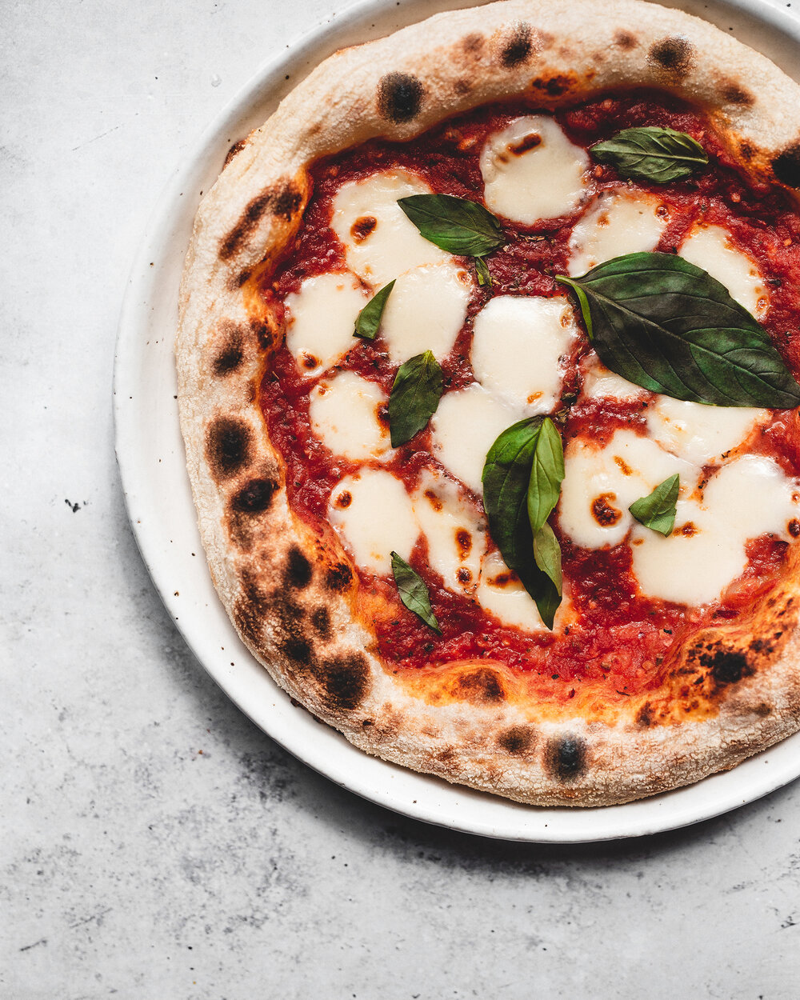

Neapolitan Pizza

This recipe will make the freshest and most authentic Neapolitan Pizza!
Skip the takeout because with only a handful of ingredients you can make the most
delicious pizza in the comfort of your own home with your friends and family!
Ingredients
For The Dough
- 1 1/2 cups plus 2 tablespoons warm water
- 3/4 teaspoon active dry yeast
- 4 cups unbleached all-purpose flour, plus more for dusting
- 2 1/2 teaspoons kosher salt
- Extra-virgin olive oil, for brushing
- Cornmeal, for dusting
For The Toppings
- 1 28-ounce can whole peeled tomatoes
- 8 ounces fresh mozzarella cheese, sliced
- Extra-virgin olive oil, for drizzling
- Torn fresh basil, for topping
Steps
- Make the dough: Combine the warm water and yeast in a small bowl,
stirring to dissolve the yeast. Combine the flour and salt in a medium bowl.
Add the yeast mixture to the flour and stir to make a shaggy dough. (The dough should be tacky. If it feels too wet and sticky, a
dd flour, 1 tablespoon at a time; if it's too stiff,add a little water.) Transfer to a lightly oiled surface and knead until smooth and elastic, about 3 minutes. Place an inverted bowl over the dough
and let rise slightly, 30 minutes. Divide the dough into 4 pieces and form each into a ball; arrange 3 inches apart on a lightly oiled baking sheet. Rub the tops of the dough lightly with olive oil and
cover the baking sheet with plastic wrap. Refrigerate overnight.
- Remove the dough from the refrigerator about 2 hours before baking; let sit, covered, until ready to use. One hour before baking, put a pizza stone or inverted baking sheet on the middle oven rack and preheat to
500 degrees F (or 550 degrees F if your oven goes that high)
- Make the sauce: Combine the tomatoes and their juices with
1 teaspoon salt in a blender; blend until smooth.
- Generously sprinkle a pizza peel or an inverted baking sheet with cornmeal. Place 1 ball of dough upside down on the cornmeal using floured hands. Gently pull the dough into an 8- to 10-inch circle, reflouring your hands as needed and being careful not to deflate the dough. Spread about 1/4 cup tomato sauce on the crust; top with one-quarter of the mozzarella. D
rizzle with 1 to 2 teaspoons olive oil and season with salt.
- Slide the pizza onto the hot stone and bake until the crust is dark golden brown and the cheese is bubbling, 7 to 9 minutes. Transfer to a cutting board and sprinkle with basil.
Let cool 2 minutes before slicing. Repeat to make 3 more pizzas.